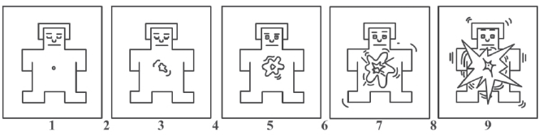
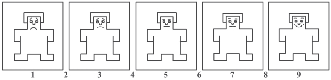
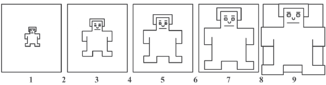
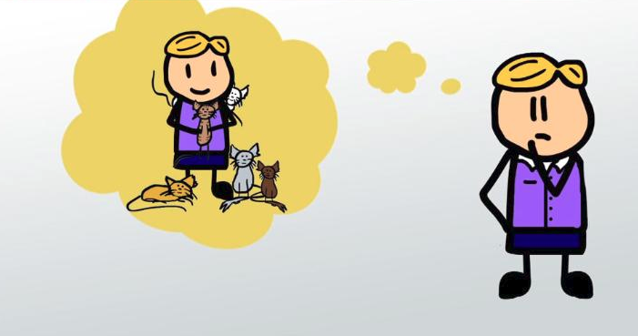

Emotion Experiment
Feedback
Arousal :

Inactive
Active
Valence :

Unpleasant
Neutral
Pleasant
Dominance :

Submissive
Dominant
Liking :
Least
Fair
Much
Relevance :

Not related
Completely related
Familiarity :
Least
Fair
Much
Select one emotion from the list :
'Miserable: wretchedly unhappy or uncomfortable'
"Melancholic: Feeling or expressing pensive sadness"
'Sad: Feeling or showing sorrow, unhappy'
'Depressed: in a state of unhappiness or despondency'
'Dissatisfied: Not content or happy with something.'
'Despondent: In low spirits from loss of hope or courage.'
'Taken Aback: Shock or surprise someone.'
No Emotion From List
Finish
Next